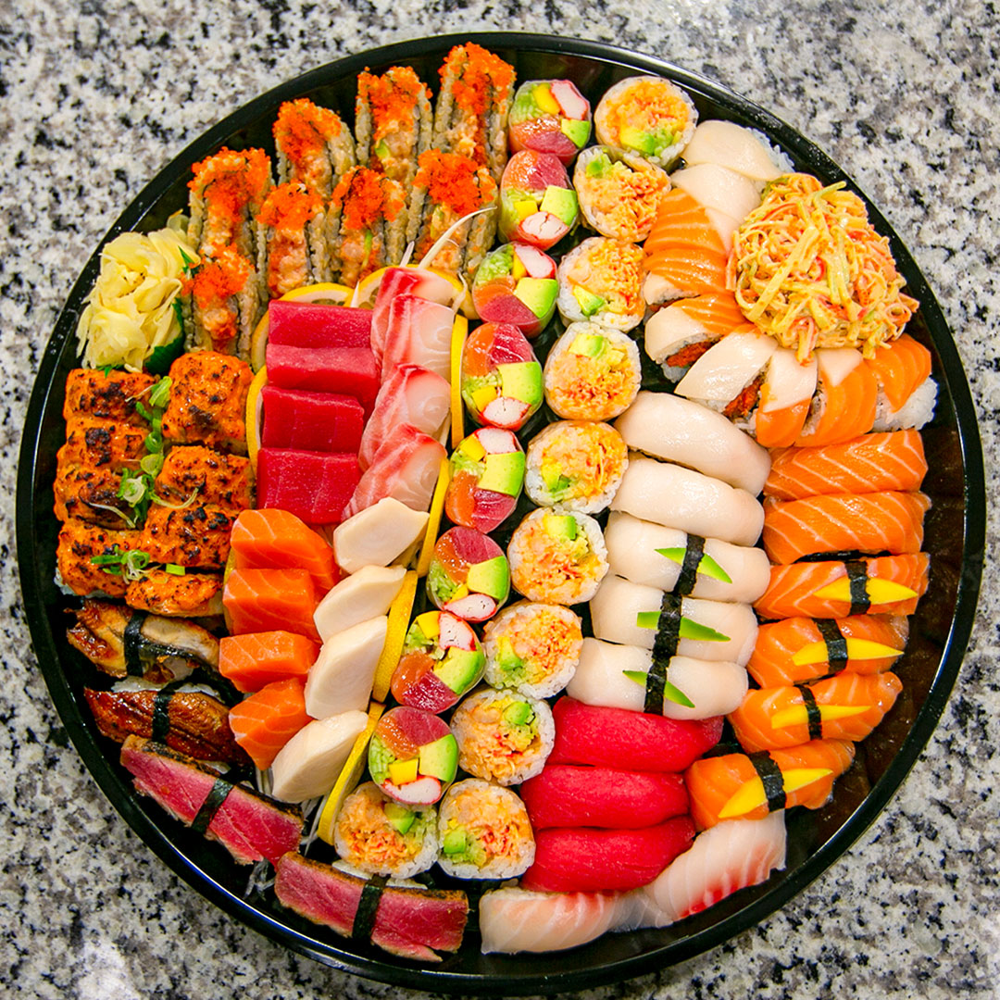
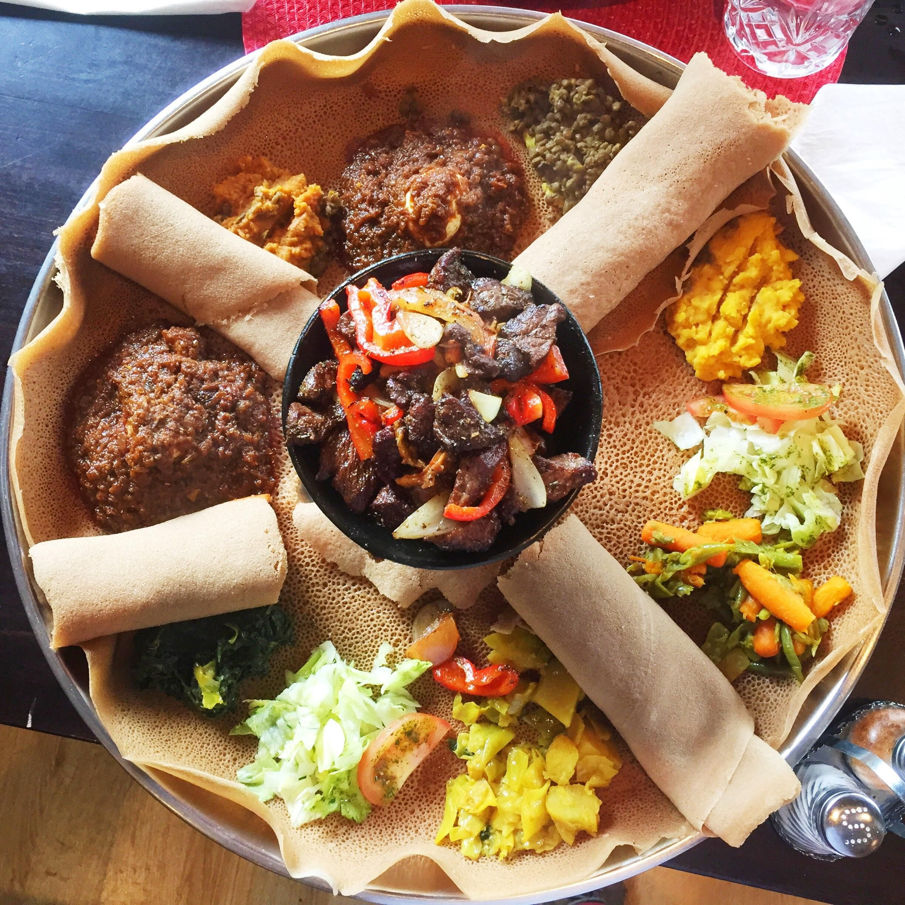
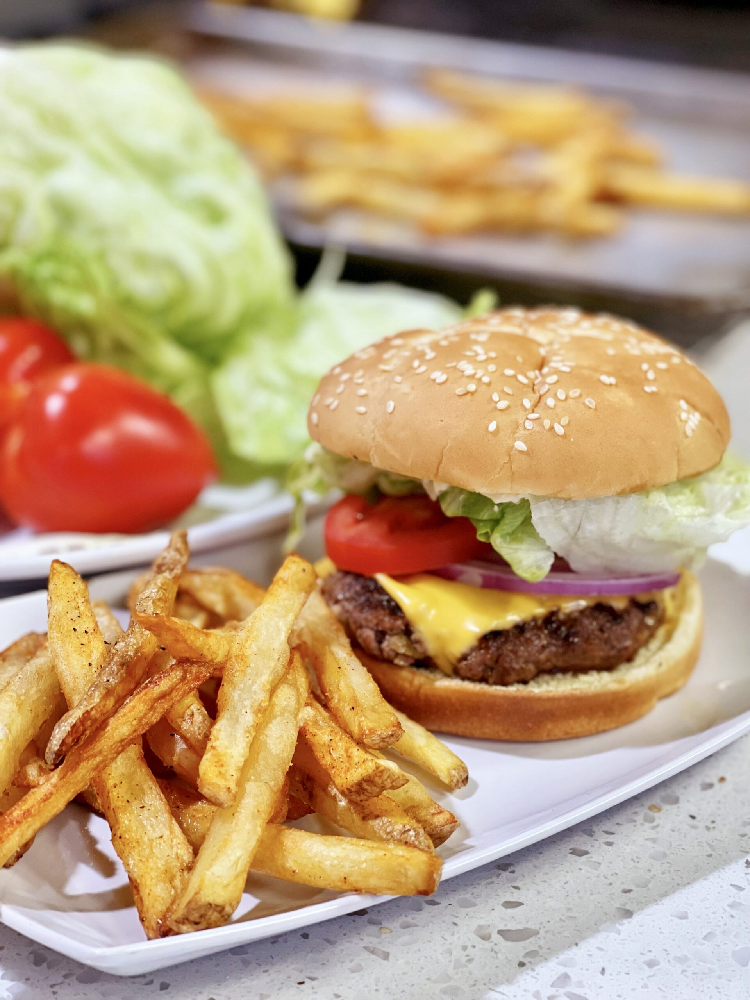

Case study / 01
See what your
friends are craving.
Munch is a food delivery app concept built around one idea: ordering is more fun with friends. Designed for Gen Z and millennial users who get bored eating the same thing on repeat.
Friend activity: live preview

James ordered

Hannah ordered

Miguel ordered

Fred ordered